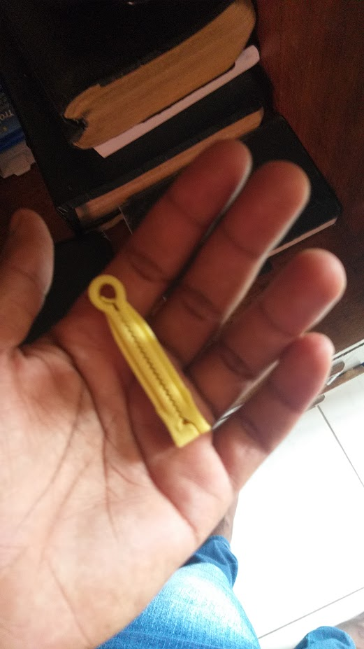
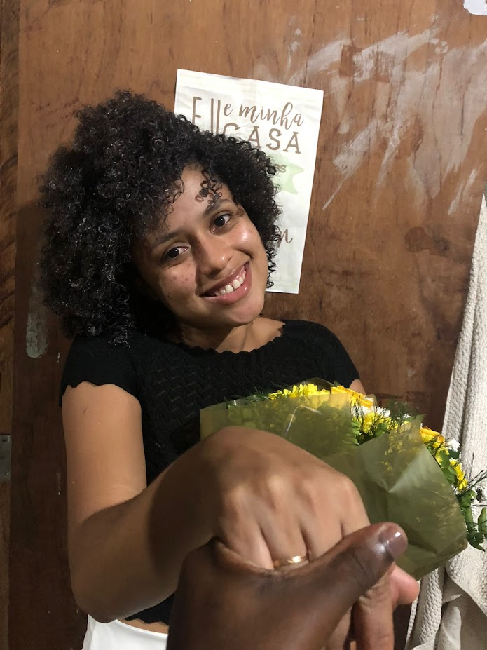
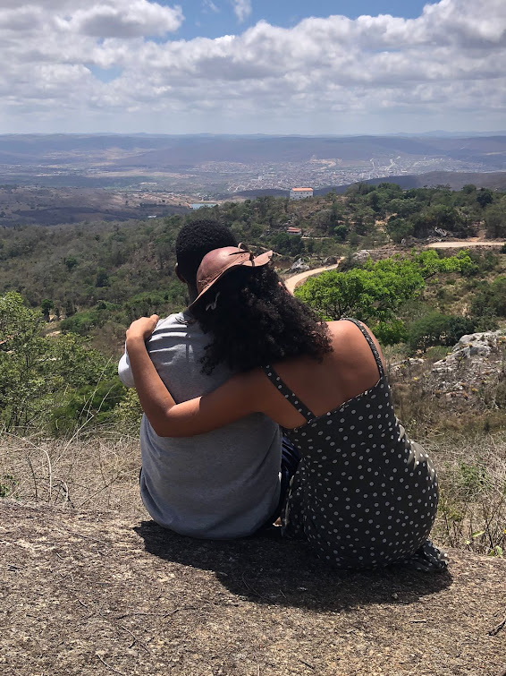
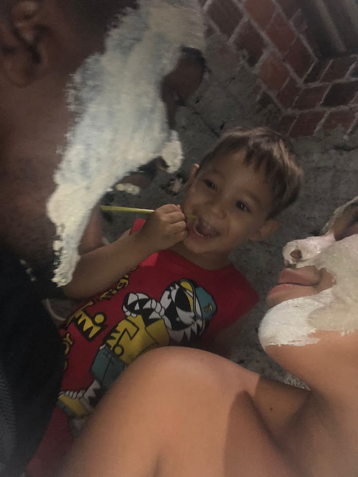
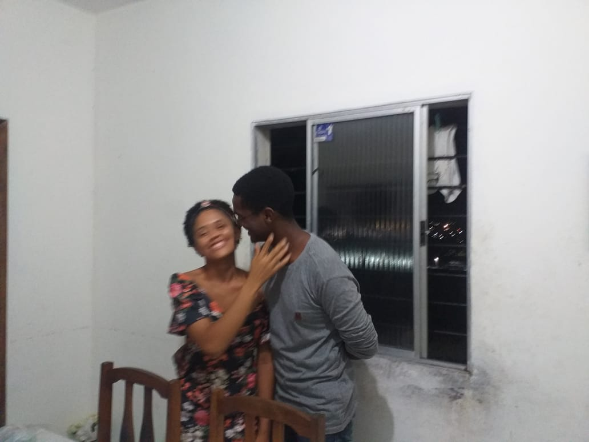
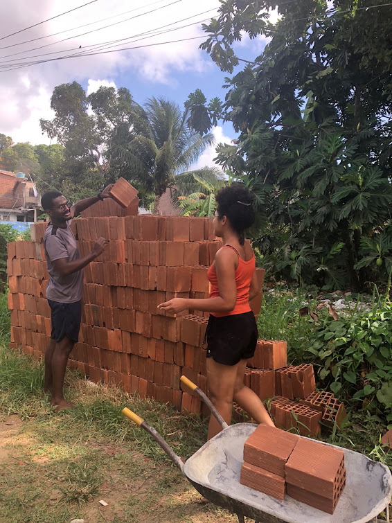
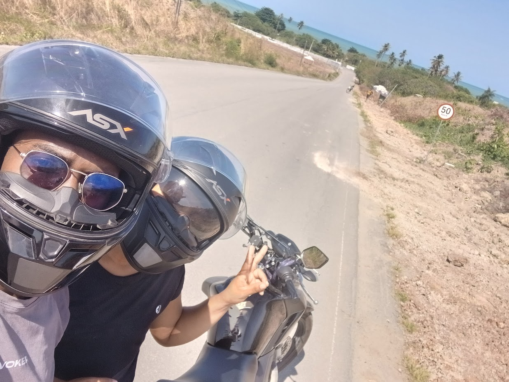
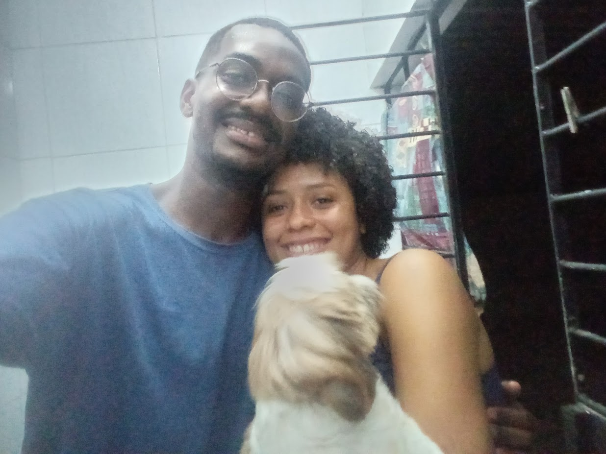
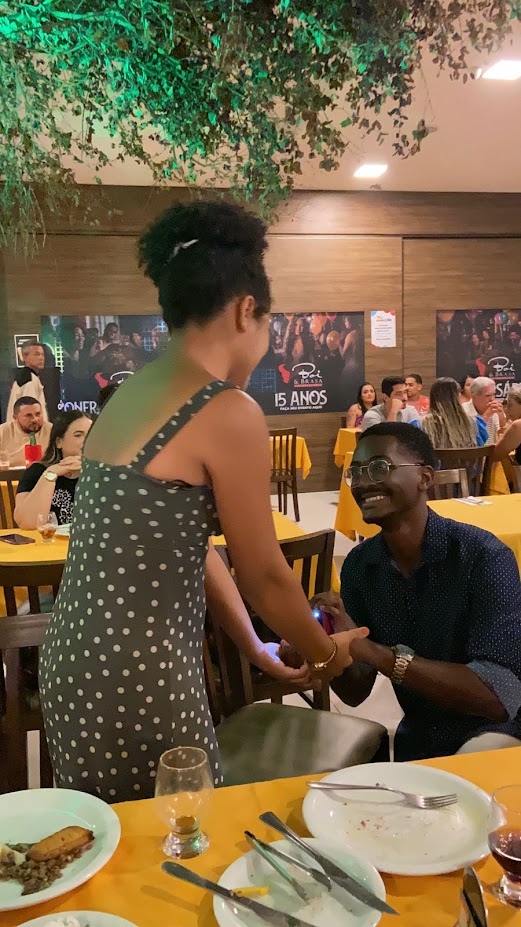

Nossa Caminhada
A Dois
Conforme você desce a página, nossas pegadas vão se formando suavemente na estrada do tempo, relembrando cada instante da nossa linda história.

O Primeiro Passo Juntos
Lembro perfeitamente do dia em que você viajou para São Paulo. Mesmo a milhares de quilômetros, a distância não apagou o nosso sonho, e jamais abrimos mão um do outro.

A Leveza do Seu Sorriso
Com você aprendi que a felicidade está nas gargalhadas bobas no meio do dia. Seu sorriso sempre foi e sempre será o meu porto seguro em qualquer tempestade.

Desbravando o Mundo Juntos
Cada viagem e cada passeio ao seu lado se transformaram em memórias inesquecíveis. Não importa para onde fomos, o melhor lugar do mundo é ao seu lado.

A Beleza do Dia a Dia
Transformamos a rotina em algo mágico. O café da manhã, as conversas sem fim antes de dormir e o carinho diário que renova todas as minhas forças.

Apoiando Um ao Outro
Superamos desafios e comemoramos vitórias. Ter você segurando a minha mão me deu a coragem necessária para crescer e ser uma pessoa melhor a cada dia.

Conquistas Compartilhadas
Cada data comemorativa e conquista ao longo desses anos marcou um degrau a mais na nossa sólida história de amor.
O Mesmo Brilho nos Olhos
Mesmo após anos, continuo me apaixonando pela mesma pessoa todos os dias quando olho para você. Seu brilho ilumina minha vida.

Construindo Nossos Sonhos
Passo a passo, desenhamos o nosso presente e futuro com amor, paz e a certeza de estarmos no lugar certo.

Crescendo Lado a Lado
Nestes anos, errei bastante, mas aprendir. O nosso amor amadureceu e se tornou a estrutura mais forte de nossas vidas.

5 Anos De Pura Felicidade!
Chegamos à marca de mais mês juntos! Esta caminhada foi incrível, mas tenho certeza absoluta de que ela é apenas o começo da nossa vida toda juntos. Te amo infinitamente!
Pronta Para os Próximos Passos?
Obrigado por ser a melhor companheira de jornada que eu poderia ter no mundo.
Tenho uma pergunta importante...
Você quer ficar comigo para todo sempre? 💍